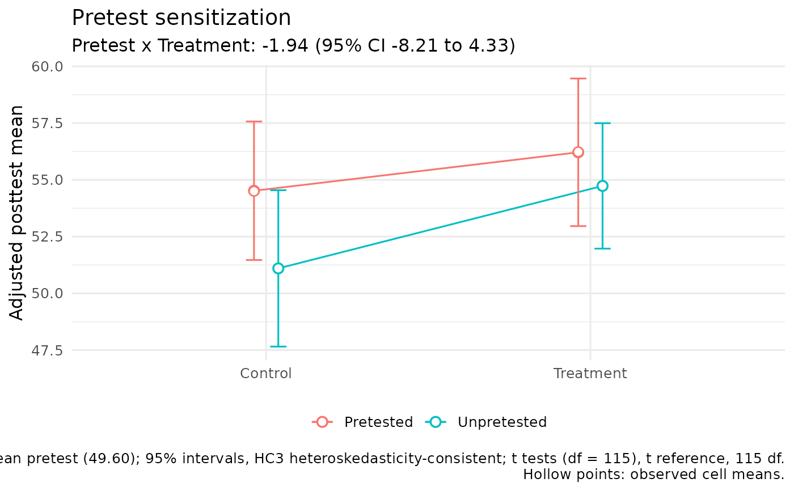
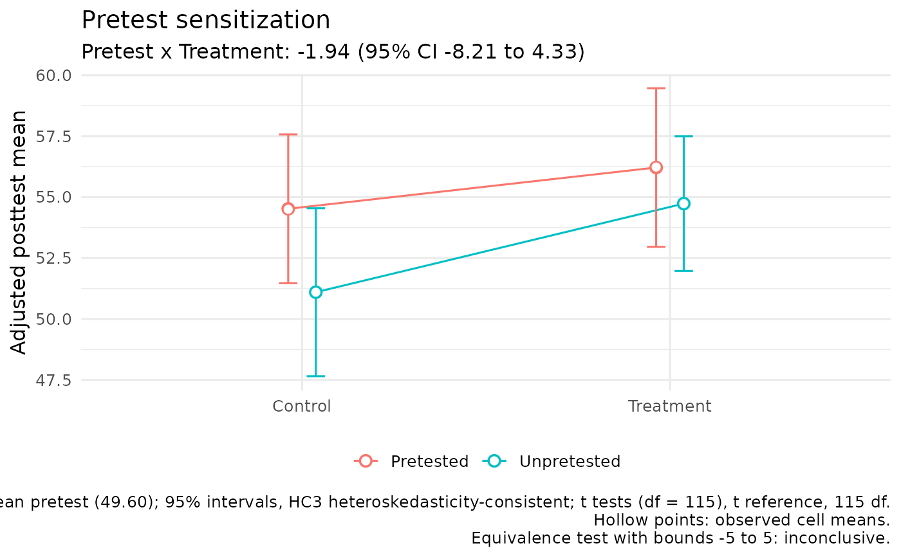

Draws the Pretest x Treatment interaction that the Solomon design exists to test: model-adjusted posttest means for the four groups, with confidence intervals, joined within each pretest condition so that sensitization appears as lines that are not parallel.
Arguments
- fit
A fit from
fit_solomon_glm().- bounds
Optional equivalence bounds for the sensitization contrast, as one positive number or
c(lower, upper). When supplied, the caption reports the outcome ofequivalence_solomon()with these bounds, which should be fixed before the data are examined.- alpha
Significance level for the equivalence test when
boundsis supplied. Default is 0.05.- show_observed
Logical; if
TRUE(default), overlay observed cell means as hollow points.
Details
The treatment effect among pretested participants is adjusted for the
pretest, so the sensitization contrast fit_solomon_glm() reports is not
the difference of differences among raw cell means. The figure therefore
draws model-adjusted means: pretested groups are evaluated at the mean
pretest score among pretested participants (the usual ANCOVA adjusted
mean), unpretested groups without a pretest, and any covariates at their
sample means. Because the model has no treatment-by-pretest-score term, the
difference of differences among these adjusted means equals the fitted
Pretest x Treatment estimate exactly. Observed cell means are shown as
hollow points for comparison.
Intervals for the adjusted means use the fitted covariance matrix and reference distribution: t with residual degrees of freedom, Satterthwaite t for CR2, or the normal distribution for binomial and Poisson models, whose means are shown on the link scale. The sensitization estimate and interval in the subtitle are taken unchanged from the fit.
Examples
fit <- with(solomon_example, fit_solomon_glm(y_post, treat, pretested, y_pre))
plot_sensitization(fit)

plot_sensitization(fit, bounds = 5)
